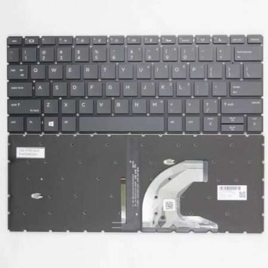
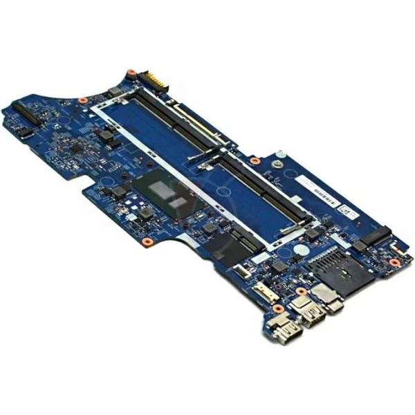

Transparent laptop repair pricing
We explain likely repair costs early so customers searching for affordable laptop repair in Nairobi can make informed decisions.
MUGGO TECH Computers helps students, businesses, and everyday laptop users in Nairobi CBD with screen replacement, battery repair, keyboard repair, motherboard diagnosis, SSD upgrades, and refurbished laptops for sale.
We explain likely repair costs early so customers searching for affordable laptop repair in Nairobi can make informed decisions.
Our service is built for Nairobi customers who want quick diagnosis, simple communication, and a repair partner they can reach easily.
If the repair is not worth it, we can recommend a smart SSD upgrade or help you choose a reliable refurbished laptop instead.
These are the common laptop problems we solve for customers across Nairobi and other parts of Kenya.

We replace cracked, flickering, dim, and dead laptop screens for major brands used in Kenya.

We handle draining batteries, non-charging laptops, broken keys, and typing issues that slow down work and study.

For laptops with no power, charging faults, or board-level failures, we diagnose carefully before recommending repair.

If repair is not the best option, we offer dependable refurbished laptops in Nairobi for work, school, and business use.
Customers looking for laptop repair in Nairobi CBD usually want three things: a fast answer, a fair price, and confidence that the repair will actually solve the problem. That is why we start with diagnosis, explain the issue in plain language, and recommend the most practical fix.
Whether you need laptop battery replacement, laptop screen replacement, motherboard diagnosis, or an SSD upgrade, our goal is to reduce downtime and help you avoid spending money on the wrong solution.
MUGGO TECH Computers mainly serves customers searching for laptop repair near Nairobi CBD, but we also support buyers and repair customers from other parts of Nairobi and across Kenya through direct phone and WhatsApp communication.
If you are comparing local options for affordable laptop repair in Kenya, you can start with our repair pricing page, browse our refurbished laptops for sale, or request a quote on the contact page.
These answers are designed to help customers searching for local laptop repair services understand what to expect before contacting us.
MUGGO TECH Computers provides laptop repair in Nairobi CBD for screen replacement, battery repair, keyboard faults, motherboard diagnosis, SSD upgrades, and software issues.
Laptop screen replacement starts from KSh 5,500, but the final cost depends on the laptop brand, model, and screen type.
Yes. We sell refurbished laptops in Nairobi, including dependable business-class models that are well suited for office work, school, and remote work.
The fastest way is to send your laptop model and problem on WhatsApp or use our quote form on the contact page so we can respond with the best next step.